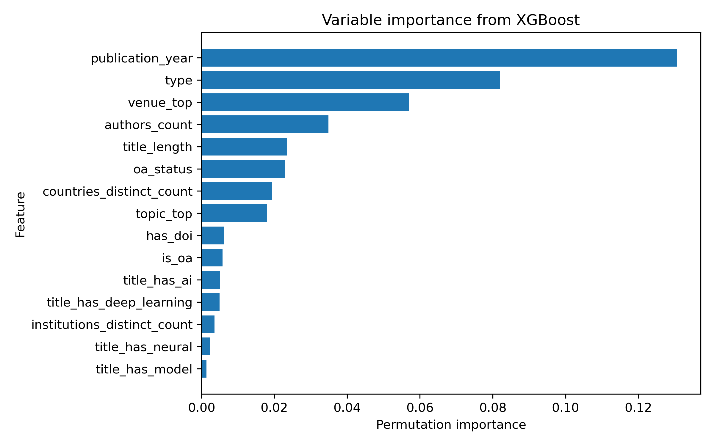
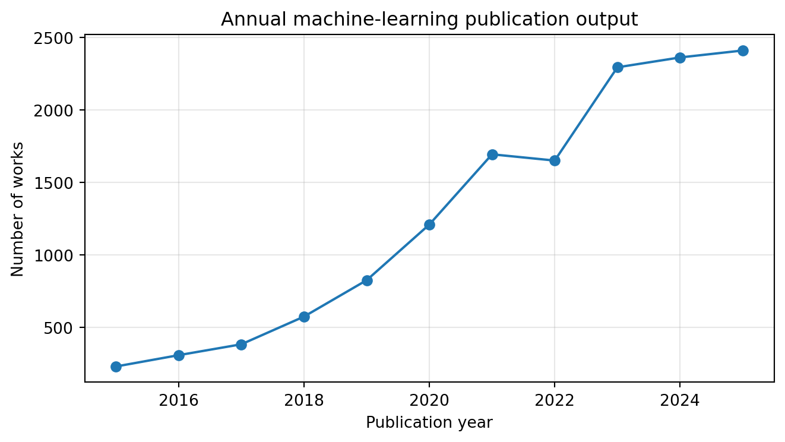
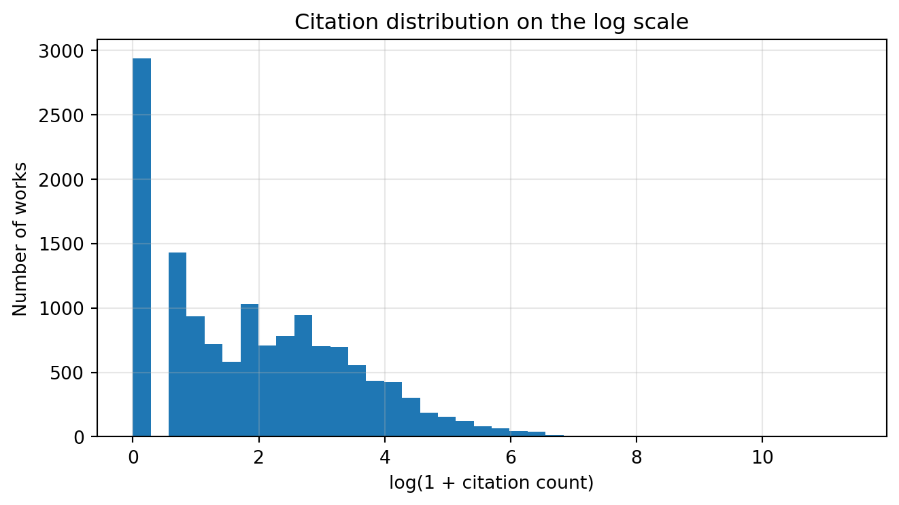

| variable | n_missing | pct_missing | |
|---|---|---|---|
| 0 | cited_by_count | 0 | 0.0 |
| 1 | publication_year | 0 | 0.0 |
| 2 | is_oa | 0 | 0.0 |
| 3 | oa_status | 0 | 0.0 |
| 4 | authors_count | 0 | 0.0 |
| 5 | countries_distinct_count | 0 | 0.0 |
| 6 | institutions_distinct_count | 0 | 0.0 |
| 7 | venue | 0 | 0.0 |
| 8 | primary_topic_name | 0 | 0.0 |
Final Project: Predicting Citation Impact in University of Toronto Machine-Learning Research Using OpenAlex
1 Introduction
OpenAlex provides publication-level metadata that can be used to study research output, open-access status, collaboration patterns, and citation outcomes. Building on the midterm analysis, this final project studies keyword-defined machine-learning works affiliated with the University of Toronto from 2015 to 2025. The final project shifts from mainly descriptive analysis to a predictive and explanatory modeling question: which publication metadata are associated with citation impact, and how well can those metadata predict citation outcomes?
1.1 Research questions and hypotheses
- Trend question: How did University of Toronto machine-learning publication output, open-access share, and international collaboration change between 2015 and 2025?
- Prediction question: How well can publication metadata available at or near publication time predict citation impact?
- Interpretation question: Which predictors are most important for citation impact: open access, international collaboration, team size, work type, venue, topic, or publication year?
I expect open-access works, internationally collaborative works, and larger-team works to have higher citation impact, after adjusting for publication year. I also expect tree-based models to outperform linear models because citation patterns may involve nonlinearities and interactions among team size, topic, venue, and publication year.
2 Methods
2.1 Data acquisition
The corpus is retrieved from the OpenAlex /works endpoint using the University of Toronto institution ID, publication years 2015–2025, article/preprint work types, and a keyword-defined machine-learning search. The same broad keyword definition as the midterm is retained so that the final analysis is comparable to the preliminary report. If a saved dataset is used for reproducibility, it is stored in the project data/ directory; otherwise the API retrieval script can regenerate the data.
2.2 Data cleaning and missing values
After retrieval, exact duplicate OpenAlex work IDs are removed. Publication year, publication date, citation count, author count, country count, and institution count are converted to numeric or date formats. Records with missing publication year or missing OpenAlex work ID are removed because these fields are required to define the study window and deduplicate works. Missing categorical fields such as venue, topic, and open-access status are retained as an explicit Unknown category. Numeric predictors are imputed within the model pipeline using training-set medians, and missingness indicators are kept where useful. This approach avoids dropping a large number of works only because one metadata field is absent, while still making missing metadata visible in the analysis.
2.3 Why log-transform citation counts?
Citation counts are non-negative, highly right-skewed, and include many zero-citation works. I use log(1 + citations) and log(1 + citations per year) to keep zero-citation works while reducing the influence of extremely highly cited papers. In regression models, coefficients on the log scale are interpreted as approximate multiplicative differences in citation impact. I use citation-rate outcomes and publication-year controls because newer papers have had less time to accumulate citations.
2.4 Modeling design
The main prediction target is log_cites_per_year, a citation-rate outcome that partially adjusts for different exposure times across publication years. I compare a regularized linear model, Random Forest, and XGBoost when XGBoost is available. The train/test split is stratified by publication year so that each split contains works from across the study period. Model performance is evaluated on held-out data using RMSE, MAE, and test-set \(R^2\). Variable importance is estimated using permutation importance on the test set, which allows the importance comparison to be computed in a model-agnostic way.
The best cross-validated Ridge model used an alpha value of 1.0. The best Random Forest used 300 trees, maximum depth 14, and minimum leaf size 5. The best XGBoost model used 600 trees, maximum depth 5, learning rate 0.03, subsample rate 0.8, and column subsample rate 0.8.
3 Results
3.1 Dataset overview and missingness
3.1.1 Predictive model performance
| Model | RMSE | MAE | R2 | |
|---|---|---|---|---|
| 0 | XGBoost | 0.792 | 0.582 | 0.369 |
| 1 | Random Forest | 0.810 | 0.595 | 0.340 |
| 2 | Ridge regression | 0.835 | 0.618 | 0.298 |
Table 2 compares the predictive performance of Ridge regression, Random Forest, and XGBoost on the held-out test set. XGBoost performed best, with an RMSE of 0.792, MAE of 0.582, and test-set (R^2) of 0.369. Random Forest was the second-best model, with an RMSE of 0.810 and (R^2) of 0.340, while Ridge regression had the weakest performance, with an RMSE of 0.835 and (R^2) of 0.298.
The improvement from Ridge regression to the two tree-based models suggests that citation impact is not fully captured by a simple linear relationship between publication metadata and citation rate. Instead, nonlinear patterns and interactions among publication year, work type, venue, collaboration structure, and open-access characteristics appear to improve predictive performance. At the same time, the best model’s (R^2) remains moderate, which is expected because citation outcomes are noisy and are influenced by many factors not observed in OpenAlex metadata, such as paper quality, author reputation, conference prestige, media attention, and field-specific citation norms.
3.1.2 Variable importance

Figure 1 shows permutation importance from the best-performing XGBoost model. Publication year was the most important predictor, which is reasonable because citation opportunities differ strongly across time even after using citations per year. Work type was the second-most important feature, suggesting that articles and preprints have systematically different citation patterns in this corpus. Venue group and topic group were also important, indicating that citation impact varies across publication outlets and research areas.
Collaboration-related variables also contributed to predictive performance. Author count and countries count ranked among the more important features, which is consistent with the descriptive results showing that larger teams and international collaborations tend to have higher citation impact. Open-access metadata also mattered: OA status appeared among the top predictors, although its importance was smaller than publication year, work type, venue, and author count. Overall, the variable-importance results suggest that citation impact is associated with a combination of time, publication format, venue/topic context, collaboration structure, and openness.
3.2 Descriptive trends
The corpus contains 13935 keyword-defined machine-learning works affiliated with the University of Toronto between 2015 and 2025. The descriptive trends show rapid growth in annual publication output, consistently high open-access rates, and a moderate increase in international collaboration.

Figure 2 shows that publication output increased substantially over the study period. This confirms the main midterm finding that machine-learning-related research activity at the University of Toronto expanded rapidly from 2015 to 2025.
Figure 3 shows that the open-access share remained high throughout the study period, while the international-collaboration share increased more gradually. This suggests that openness was already common in this research area, whereas international collaboration changed more moderately over time.

Figure 4 shows that citation impact remains right-skewed even after using the log transformation. This supports the decision to model citation impact using log(1 + citations per year) rather than raw citation counts.
3.3 Interactive visualizations
Interactive versions of the annual trend explorer, citation explorer, and model variable-importance chart are provided on the project website’s visualization page. These visualizations complement the static report figures by allowing users to inspect yearly trends, publication-level citation patterns, and model interpretation results.
4 Conclusions and Summary
The predictive modeling results extend the midterm descriptive analysis by showing that publication metadata can explain a meaningful, but limited, share of variation in citation impact. XGBoost achieved the best held-out performance among the three models, outperforming both Random Forest and Ridge regression. This supports the idea that nonlinear relationships and interactions are useful for predicting citation impact. However, the moderate test-set (R^2) also shows that citation counts are difficult to predict from metadata alone. OpenAlex metadata capture useful structural information about publications, but they do not directly measure paper quality, novelty, author reputation, or broader scholarly attention.
The most important predictors were publication year, work type, venue group, author count, title length, OA status, countries count, and topic group. These results are broadly consistent with the descriptive analysis: citation impact is higher for some publication formats, larger teams, internationally connected works, and open-access works. Because this is an observational prediction task, these associations should not be interpreted as causal effects. For example, open-access papers may receive more citations partly because they are easier to access, but they may also differ from closed works in topic, venue, funding, or author behavior.
5 References / data source
OpenAlex API and University of Toronto institution ID I185261750.